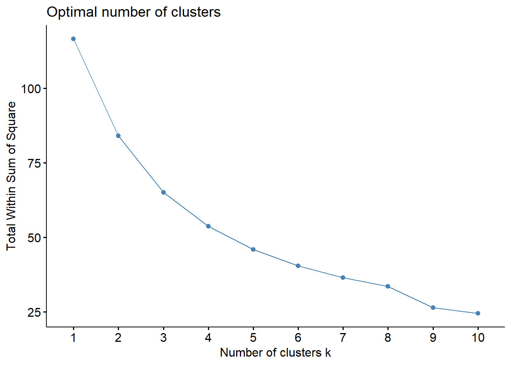

Chapter 4 Second Clustering
4.1 Reducing to 7 Variables
In order to have fewer variables to look through to find what makes a cluster unique, I reduced the number of variables into the following more interpretable variables:
To do this, I combined the variables that I thought fell into each category, by finding the average of that set of variables’ z-scores. Some variables didn’t fall neatly into one of the categories, especially those related to penalties, and those were left off. Obviously, a lot of the more minute variations between teams are lost here as some teams might be good in some of the included categories and bad at other, but that is the sacrifice we make for interpretability. I could have done PCA to capture as much of the information as possible with fewer variables; however, this would still result in a loss of what information that component is trying to convey.
Note: As I am writing this I am considering, would there be an advantage to breaking the variables into the seven categories and then finding one principal component and take the value of that principal component for value for that category; however, I think that there would be issues with that component not necesarily having bigger = better, but I’m not sure. If you have taken the time to read this far, message me with what you think about that :)
Here is also where it was important to negate the turnover variables earlier, so that a team with few interceptions has a positive z-score, helping their “Passing Offense”. Finally, I negated all of the defensive stats, so that a positive number is a team that is above average in that category and negative is below average. It was confusing for negatives to be good, so I got rid of that.
Teams <- All_stats$Team
Results <- rowMeans(subset(Scaled_stats,select = c('Win Percent','Average Margin of Victory','Strength of Schedule','Simple Rating System (SRS)','Offensive SRS','Defensive SRS')))
`Total Offense` <- rowMeans(subset(Scaled_stats,select = c('Win Percent','Average Margin of Victory','Strength of Schedule','Simple Rating System (SRS)','Offensive SRS','Defensive SRS','Scoring Percentage','Turnover Percentage','Total Turnovers')))
`Passing Offense`<- rowMeans(subset(Scaled_stats,select = c('Completions','Pass Attempts','Pass Yards','Passing Touchdowns','Interceptions Thrown','Net Yards per Pass Attempt','Passing First Downs')))
`Rushing Offense` <- rowMeans(subset(Scaled_stats,select = c('Rushing Attempts','Rushing yards','Rushing Touchdowns','Yards per Rush Attempt','Rushing First Downs','Fumbles')))
`Total Defense` <- -rowMeans(subset(Scaled_stats,select = c('Points Against','Total Yards Allowed','Total Defensive Plays','Yards Allowed per Play','Total Turnovers Created','Opponents Total First Downs','Opponents Scoring Percentage','Opponent Turnover Percentage')))
`Passing Defense` <- -rowMeans(subset(Scaled_stats, select = c('Opponents Completions','Opponents Pass Attempts','Opponents Pass Yards','Opponents Passing Touchdowns','Opponents Interceptions Thrown','Opponents Net Yards per Pass Attempt','Opponents Passing First Downs')))
`Rushing Defense` <- -rowMeans(subset(Scaled_stats, select = c('Opponents Rushing Attempts','Opponents Rushing yards','Opponents Rushing Touchdowns','Opponents Yards per Rush Attempt','Opponents Rushing First Downs', 'Fumbles Forced')))
Scaled_Combined_Stats <- data.frame(Results, `Total Offense`, `Passing Offense`, `Rushing Offense`, `Total Defense`, `Passing Defense`, `Rushing Defense`)4.2 Optimizing the Number of Clusters
Once again, I used “fviz_nbclust()” to find the ideal number of clusters, and once again, I ignored the output. In this case, there was a more clear elbow at 4 or 5 clusters, but I’m going to ignore that and move forward. I think that for this project, 8 clusters just makes the most sense, because the NFL has 8 divisions. If you think that I should have used a different number, go ahead and run it with that many clusters.
fviz_nbclust(Scaled_Combined_Stats, kmeans, method = "wss",k.max = 10, nboot = 100)
4.3 Creating Eight Clusters
If we use the elbow method to determine the optimal number of clusters, we would most likely choose 4 clusters as the optimal number; however, since this is an analysis of the NFL, I want to instead use 8 clusters, like the 8 divisions in the NFL.
cluster2 <- kmeans(Scaled_Combined_Stats, centers = 8, nstart = 1000)
Scaled_Combined_Stats_Analysis <- Scaled_Combined_Stats
Scaled_Combined_Stats_Analysis$cluster <- cluster2$cluster
Scaled_Combined_Stats_Analysis$Team <- All_stats$Team4.4 Cluster Reveal
centers <- round(cluster2$centers, digits = 2)
for(i in 1:8){
teams <- Scaled_Combined_Stats_Analysis %>%
filter(cluster == i) %>%
select(c(Team,))
cat(paste("- `Cluster ", i, " \n", " Record: ",centers[i,1]," Total Offense: ",centers[i,2]," Passing Offense: ",centers[i,3]," Rushing Offense: ",centers[i,4]," Total Defense: ",centers[i,5]," Passing Defense: ",centers[i,6]," Rushing Defense: ",centers[i,7] ,"` \n"))
for(j in teams){
cat(paste(" - `", j, "` \n"))
}
}Cluster 1 Record: -0.21 Total Offense: -0.03 Passing Offense: 1.18 Rushing Offense: -1.27 Total Defense: 0.17 Passing Defense: 0.3 Rushing Defense: -0.15Tampa Bay BuccaneersLos Angeles Chargers
Cluster 2 Record: -0.5 Total Offense: -0.22 Passing Offense: -0.79 Rushing Offense: 0.75 Total Defense: -0.83 Passing Defense: -0.4 Rushing Defense: -0.67New York GiantsChicago BearsCarolina PanthersAtlanta FalconsLas Vegas Raiders
Cluster 3 Record: -0.74 Total Offense: -0.69 Passing Offense: -0.56 Rushing Offense: -0.31 Total Defense: -0.21 Passing Defense: -0.6 Rushing Defense: 0.37Los Angeles RamsArizona CardinalsTennessee TitansDenver Broncos
Cluster 4 Record: 0.3 Total Offense: 0.18 Passing Offense: -0.48 Rushing Offense: 0.31 Total Defense: 0.62 Passing Defense: 0.14 Rushing Defense: 0.71Washington CommandersNew England PatriotsBaltimore RavensPittsburgh Steelers
Cluster 5 Record: -1.39 Total Offense: -1.59 Passing Offense: -0.62 Rushing Offense: -1.05 Total Defense: -0.49 Passing Defense: 0.32 Rushing Defense: -0.91Indianapolis ColtsHouston Texans
Cluster 6 Record: 0.37 Total Offense: 0.42 Passing Offense: 0.96 Rushing Offense: -0.17 Total Defense: -0.52 Passing Defense: -0.81 Rushing Defense: 0.09Minnesota VikingsDetroit LionsMiami DolphinsJacksonville JaguarsKansas City Chiefs
Cluster 7 Record: 1.12 Total Offense: 0.94 Passing Offense: 0.44 Rushing Offense: 0.48 Total Defense: 1.11 Passing Defense: 0.56 Rushing Defense: 0.75Philadelphia EaglesDallas CowboysSan Francisco 49ersBuffalo BillsCincinnati Bengals
Cluster 8 Record: 0.01 Total Offense: -0.06 Passing Offense: -0.01 Rushing Offense: -0.11 Total Defense: 0.03 Passing Defense: 0.64 Rushing Defense: -0.5Green Bay PackersNew Orleans SaintsSeattle SeahawksNew York JetsCleveland BrownsAvg TeamInteresting findings from this section are their own chapter. You’re almost there :)